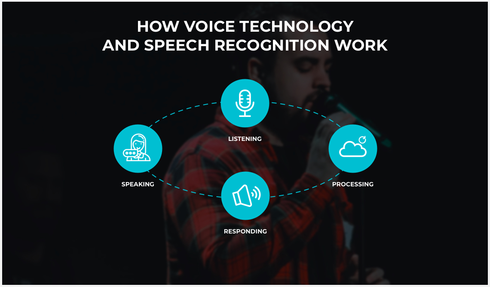

Geeksforgeeks has a blog teaching users about gesture recognition by detailing methods, applications, advancements and user experiences!
What is Gesture Recognition?Vilmate outlines voice user interfaces and speech recognition, providing key definitions, technical processes, benefits and limitations.
Voice User Interface and Speech Recognition 